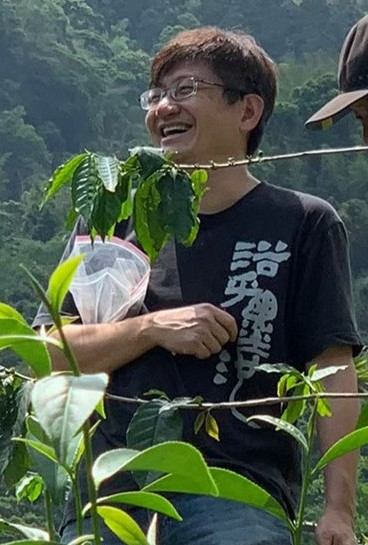

TEAM · MODERATOR
莊愷瑋 教授
如果立志未來要變成蝴蝶，現在就得甘願做隻毛毛蟲。
如果堅持現在是忠於自己的小草，就得認清未來被踐踏的現實。
如果堅持現在是忠於自己的小草，就得認清未來被踐踏的現實。
-- 亞里士多德／形而上學 第 9 卷

主持人簡介 Moderator introduction
莊愷瑋 教授
Prof. Juang, Kai-Wei
莊愷瑋教授畢業於國立臺灣大學農業化學研究所博士班（1999 年），現職國立中興大學農藝學系教授（2024 年迄今），曾任教於明道大學精緻農業學系（2001–2009 年）及國立嘉義大學農藝學系（2009–2024 年）。
主要研究專長包括土壤污染調查、空間資訊分析、作物模式開發與農地碳庫動態監測模擬；在土壤學、植物營養學、肥料學及土壤肥力管理的教學與研究經驗已逾 25 年。多年來亦致力於植生復育、生物碳應用、作物重金屬毒理及土壤碳庫動態評估等研究，已發表逾 50 篇 SCI 期刊論文。
近年持續主持國科會、環境部及農業部等研究計畫，現任中華肥料協會理事長、中華土壤肥料學會常務理事、台灣農藝學會監事，並長期參與農業技術類國家考試之命題與典試工作。
學歷
國立臺灣大學農業化學研究所 博士
經歷 Experience
- 現職 / 國立中興大學農藝學系 教授
- Aug. 2013 ~ Jan. 2024 / 國立嘉義大學農藝學系 教授
- Feb. 2009 ~ Jul. 2013 / 國立嘉義大學農藝學系 副教授
- Jan. 2006 ~ Jan. 2009 / 明道大學精緻農業學系 副教授
- Jul. 2001 ~ Dec. 2005 / 明道大學精緻農業學系 助理教授
- Sep. 1999 ~ Jun. 2001 / 國立臺灣大學農業化學系 博士後研究
- Feb. 1999 ~ Aug. 1999 / 新竹工業技術研究院能源與資源研究所 研究員
著作發表
- 2026 Liao, Y.-J.; Chen, Z.-Y.; Chen, B.-C.; Juang, K.-W. Improvement of flotation-sieving method for extracting soil microplastics and delineating measurable particle-size fractions. Environmental Geochemistry and Health.
- 2025 Hsu, H.-T.; Sie, Y.-C.; Tsai, T.; Juang, K.-W. Exact Variances Associated With Unbiased Estimation for the Assessment of Soil Organic Carbon Storage in the Coffee-Growing Region of Taiwan. Soil Use and Management.
- 2025 Juang, K.-W.; Syu, C.-H.; Tsai, T.; Chen, B.-C. Screening of Stable Low-Cadmium Rice Cultivars and Derivation of Soil Cd Threshold Based on Bioconcentration Factor and Multi-Environment Analysis. Environmental Toxicology.
- 2024 Hou, C.-J.; Lu, Y.-H.; Tseng, Y.-C.; Tsai, Y.-C.; Huang, W.-L.; Juang, K.-W. Using a comprehensive model for cropland types in relationships between soil bulk density and organic carbon to predict site-specific carbon stocks. Journal of Soils and Sediments.
- 2024 Juang, K.-W.; Tsai, T.; Syu, C.-H.; Chen, B.-C. Screen for low-arsenic-risk rice varieties based on environment–genotype interactions by using GGE analysis. Environmental Geochemistry and Health.
- 2023 Juang, K.-W.; Chen, C.-P. Changes in soil organic carbon and nitrogen stocks in organic farming practice and abandoned tea plantation. Botanical Studies.
- 2023 Juang, K.-W.; Chu, L.-J.; Syu, C.-H.; Chen, B.-C. Coupling phytotoxicity and human health risk assessment to refine the soil quality standard for As in farmlands. Environmental Science and Pollution Research.
- 2021 Juang, K.-W.; Chu, L.-J.; Syu, C.-H.; Chen, B.-C. Assessing human health risk of arsenic for rice consumption by an iron plaque based partition ratio model. Science of the Total Environment.
- 2021 Juang, K.-W.; Lo, Y.-J.; Chen, B.-C. Modeling alleviative effects of Ca, Mg, and K on Cu-induced oxidative stress in grapevine roots grown hydroponically. Molecules.
- 2021 Juang, K.-W.; Lin, M.-C.; Hou, C.-J. Influences of water management combined with organic mulching on taro plant growth and corm nutrition. Plant Production Science.
- 2020 Chiao, W.-T.; Chen, B.-C.; Syu, C.-H.; Juang, K.-W. Aspects of cultivar variation in physiological traits related to Cd distribution in rice plants with a short-term stress. Botanical Studies.
- 2019 Chiao, W.-T.; Syu, C.-H.; Chen, B.-C.; Juang, K.-W. Cadmium in rice grains from a field trial in relation to model parameters of Cd-toxicity and -absorption in rice seedlings. Ecotoxicology and Environmental Safety.
- 2019 Chiao, W.-T.; Yu, C.-H.; Juang, K.-W. The variation of rice cultivars in Cd toxicity and distribution of the seedlings and their root histochemical examination. Paddy and Water Environment.
- 2019 Juang, K.-W.; Lo, Y.-C.; Chen, T.-H.; Chen, B.-C. Effects of copper on root morphology, cations accumulation, and oxidative stress of grapevine seedlings. Bulletin of Environmental Contamination and Toxicology.
- 2018 Lai, Y.-C.; Syu, C.-H.; Wang, P.-J.; Lee, D.-Y.; Fan, C.; Juang, K.-W. Field experiment for determining lead accumulation in rice grains of different genotypes and correlation with iron oxides deposited on rhizosphere soil. Science of the Total Environment.
- 2018 Syu, C.-H.; Wu, P.-R.; Lee, C.-H.; Juang, K.-W.; Lee, D.-Y. Arsenic phytotoxicity and accumulation in rice seedlings grown in arsenic-contaminated soils as influenced by the characteristics of organic matter amendments and soils. Journal of Plant Nutrition and Soil Science.
- 2017 Chen, B.-C.; Wang, P.-J.; Ho, P.-C.; Juang, K.-W. Nonlinear biotic ligand model for assessing alleviation effects of Ca, Mg, and K on Cd toxicity to soybean roots. Ecotoxicology.
- 2017 Syu, C.-H.; Chien, P.-H.; Huang, C.-C.; Jiang, P.-Y.; Juang, K.-W.; Lee, D.-Y. The growth and uptake of Ga and In of rice (Oryza sativa L.) seedlings as affected by Ga and In concentrations in hydroponic cultures. Ecotoxicology and Environmental Safety.
- 2016 Chen, C.-P.; Juang, K.-W.; Cheng, C.-H.; Pai, C.-W. Effects of adjacent land-use types on the distribution of soil organic carbon stocks in the montane area of central Taiwan. Botanical Studies.
- 2015 Yang, C.-M.; Juang, K.-W. Alleviation effects of calcium and potassium on cadmium rhizotoxicity and absorption by soybean and wheat roots. Journal of Plant Nutrition and Soil Science.
- 2015 Li, F.-L.; Yang, C.-M.; Syu, C.-H.; ...; Juang, K.-W. Combined effect of rice genotypes and soil characteristics on iron plaque formation related to Pb uptake by rice in paddy soils. Journal of Soils and Sediments.
- 2014 Juang, K.-W.; Lee, Y.-I.; Lai, H.-Y.; Chen, B.-C. Influence of magnesium on copper phytotoxicity to and accumulation and translocation in grapevines. Ecotoxicology and Environmental Safety.
- 2013 Chen, P.-Y.; Lee, Y.-I.; Chen, B.-C.; Juang, K.-W. Effects of calcium on rhizotoxicity and the accumulation and translocation of copper by grapevines. Plant Physiology and Biochemistry.
- 2012 Chen, B.-C.; Ho, P.-C.; Juang, K.-W. Alleviation effects of magnesium on copper toxicity and accumulation in grapevine roots evaluated with biotic ligand models. Ecotoxicology.
- 2012 Chen, B.-C.; Lai, H.-Y.; Juang, K.-W. Model evaluation of plant metal content and biomass yield for the phytoextraction of heavy metals by switchgrass. Ecotoxicology and Environmental Safety.
- 2012 Chen, C.-P.; Juang, K.-W.; Lee, D.-Y. Effects of liming on Cr(VI) reduction and Cr phytotoxicity in Cr(VI)-contaminated soils. Soil Science and Plant Nutrition.
- 2011 Juang, K.-W.; Ho, P.-C.; Yu, C.-H. Short-term effects of compost amendment on the fractionation of cadmium in soil and cadmium accumulation in rice plants. Environmental Science and Pollution Research.
- 2011 Juang, K.-W.; Lee, Y.-I.; Lai, H.-Y.; Wang, C.-H.; Chen, B.-C. Copper accumulation, translocation, and toxic effects in grapevine cuttings. Environmental Science and Pollution Research.
- 2011 Chen, B.-C.; Lai, H.-Y.; Lee, D.-Y.; Juang, K.-W. Using Chemical Fractionation to Evaluate the Phytoextraction of Cadmium by Switchgrass from Cd-Contaminated Soils. Ecotoxicology.
- 2011 Juang, K.-W.; Lai, H.-Y.; Chen, B.-C. Coupling bioaccumulation and phytotoxicity to predict copper removal by switchgrass grown hydroponically. Ecotoxicology.
- 2010 Lai, H.-Y.; Juang, K.-W.; Chen, Z.-S. Large-Area Experiment on Uptake of Metals by Twelve Plants Growing in Soils Contaminated with Multiple Metals. International Journal of Phytoremediation.
- 2010 Lai, H.-Y.; Juang, K.-W.; Chen, B.-C. Copper concentrations in grapevines and vineyard soils in central Taiwan. Soil Science and Plant Nutrition.
- 2010 Chen, C.-P.; Juang, K.-W.; Lin, T.-H.; Lee, D.-Y. Assessing the phytotoxicity of chromium in Cr(VI)-spiked soils by Cr speciation using XANES and resin extractable Cr(III) and Cr(VI). Plant and Soil.
- 2009 Chiu, C.-C.; Cheng, C.-J.; Lin, T.-H.; ...; Lee, D.-Y. The effectiveness of four organic matter amendments for decreasing resin-extractable Cr(VI) in Cr(VI)-contaminated soils. Journal of Hazardous Materials.
- 2008 Chen, C.-P.; Lee, D.-Y.; Juang, K.-W.; Lin, T.-H. Phytotoxicity of Soil Trivalent Chromium to Wheat Seedlings Evaluated By Chelating Resin Extraction Method. Soil Science.
- 2008 Cheng, C.-J.; Lin, T.-H.; Chen, C.-P.; ...; Lee, D.-Y. The effectiveness of ferrous iron and sodium dithionite for decreasing resin-extractable Cr(VI) in Cr(VI)-spiked alkaline soils. Journal of Hazardous Materials.
- 2008 Juang, K.-W.; Liao, W.-J.; Liu, T.-L.; ...; Lee, D.-Y. Additional sampling based on regulation threshold and kriging variance to reduce the probability of false delineation in a contaminated site. Science of the Total Environment.
- 2006 Liu, T.-L.; Juang, K.-W.; Lee, D.-Y. Interpolating Soil Properties Using Kriging Combined with Categorical Information of Soil Maps. Soil Science Society of America Journal.
- 2006 Lee, D.-Y.; Shih, Y.-N.; Zheng, H.-C.; ...; Tsui, L. Using the Selective Ion Exchange Resin Extraction and XANES Methods to Evaluate the Effect of Compost Amendments on Soil Chromium(VI) Phytotoxicity. Plant and Soil.
- 2005 Lee, D.-Y.; Huang, J.-C.; Juang, K.-W.; Tsui, L. Assessment of Phytotoxicity of Chromium in Flooded Soils using Embedded Selective Ion Exchange Resin Method. Plant and Soil.
- 2005 Juang, K.-W.; Lee, D.-Y.; Teng, Y.-L. Adaptive sampling based on the cumulative distribution function of order statistics to delineate heavy-metal contaminated soils using kriging. Environmental Pollution.
- 2005 Tsai, S.-C.; Juang, K.-W.; Jan, Y.-L. Sorption of cesium on rocks using heterogeneity-based isotherm models. Journal of Radioanalytical and Nuclear Chemistry.
- 2004 Juang, K.-W.; Chen, Y.-S.; Lee, D.-Y. Using sequential indicator simulation to assess the uncertainty of delineating heavy-metal contaminated soils. Environmental Pollution.
- 2004 Yu, P.-F.; Juang, K.-W.; Lee, D.-Y. Assessment of the phytotoxicity of chromium in soils using the selective ion exchange resin extraction method. Plant and Soil.
- 2002 Juang, K.-W.; Liou, D.-C.; Lee, D.-Y. Site-Specific Phosphorus Application Based on the Kriging Fertilizer-Phosphorus Availability Index of Soils. Journal of Environmental Quality.
- 2001 Juang, K.-W.; Lee, D.-Y.; Ellsworth, T. R. Using Rank-Order Geostatistics for Spatial Interpolation of Highly Skewed Data in a Heavy-Metal Contaminated Site. Journal of Environmental Quality.
- 2000 Hsiao, C. K.; Juang, K.-W.; Lee, D.-Y. Estimating the second-stage sample size and the most probable number of hot spots from a first-stage sample of heavy-metal contaminated soil. Geoderma.
- 2000 Tsai, S.-C.; Juang, K.-W. Comparison of Linear and Non-Linear Forms of Isotherm Models for Strontium Sorption on a Sodium Bentonite. Journal of Radioanalytical and Nuclear Chemistry.
- 2000 Juang, K.-W.; Lee, D.-Y. Comparison of Three Nonparametric Kriging Methods for Delineating Heavy-Metal Contaminated Soils. Journal of Environmental Quality.
- 1998 Juang, K.-W.; Lee, D.-Y.; Hsiao, C. K. Kriging With Cumulative Distribution Function of Order Statistics for Delineation of Heavy-Metal Contaminated Soils. Soil Science.
- 1998 Juang, K.-W.; Lee, D.-Y. Simple Indicator Kriging for Estimating the Probability of Incorrectly Delineating Hazardous Areas in a Contaminated Site. Environmental Science & Technology.
- 1998 Juang, K.-W.; Lee, D.-Y. A Comparison of Three Kriging Methods Using Auxiliary Variables in Heavy-Metal Contaminated Soils. Journal of Environmental Quality.